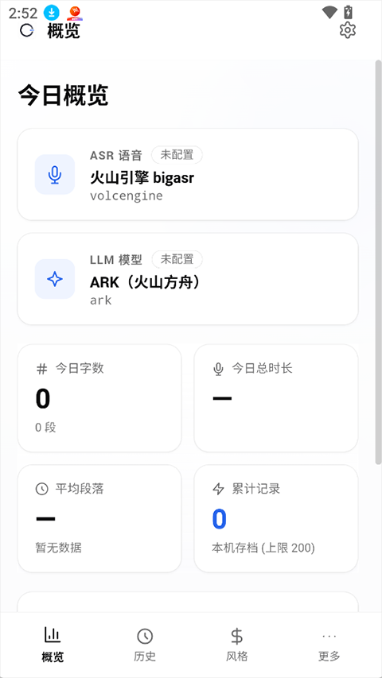
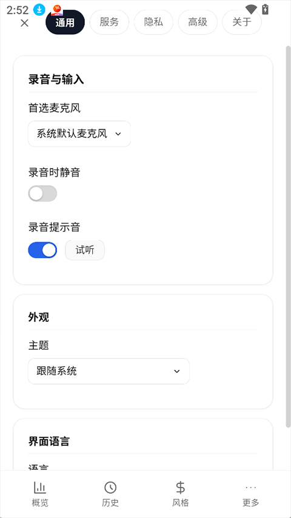

OpenLess 上手全流程：从零配置到第一次语音输入生效
刚装完 OpenLess 就卡在权限弹窗和 ASR 凭据那堆设置上？这篇教程带你一步步把麦克风、快捷键、火山引擎 ASR 和 Ark 润色跑通，一次搞定四件套。
装好了 OpenLess 双击打开，结果等了半天没反应——要么是麦克风权限没给，要么是辅助功能忘了重启，ASR 渠道验证红叉，润色 LLM 连不上。别急，这篇教程就带你把这四件事一次跑通：权限授予、ASR 配置、润色 LLM 对接、最后真的录一段音让文字出现在光标位置。
做完这四步，你按一下快捷键说话松开，当前光标位置就会吐出一段润过色的文字——能去语气词、补标点、修正识别错字，还保留你说话的原始语气。
准备工作
先确认你手头有这些东西：
- 操作系统：macOS（Apple Silicon 或 Intel 都行，对应下对 DMG）/ Windows（x64 架构，装
x64-setup.exe）/ Linux（glibc ≥ 2.39，Ubuntu 24.04 起步） - 一个语音识别（ASR）提供商的凭据——国内用户推荐火山引擎 ASR，延迟低价格友好；要能拿到 App ID、Access Token、Resource ID 这三个字段
- 一个润色 LLM 渠道的凭据——同样推荐火山方舟 Ark，需要 API Key 和一个可用的模型 ID（比如
doubao-pro-32k） - 一副带麦克风的耳机（或笔记本自带麦克风）
如果还没装软件，去官网看看，安装包从官方下载拿就行，macOS 用户记得装完先跑一遍 xattr -cr /Applications/OpenLess.app 去掉 Gatekeeper 的隔离属性——不然第一次打开会被当成"已损坏"。
第一步：把操作系统权限给到位
OpenLess 在后台需要三样东西才能正常录音和监听全局快捷键：麦克风访问、辅助功能授权、输入监控。不同平台操作路径不一样，按你在用的系统对照走。
macOS（最容易漏重启）
打开 系统设置 → 隐私与安全性，依次处理：
- 麦克风：在左侧列表里找到 OpenLess，右侧开关拨到开
- 辅助功能：同样在左侧找到 OpenLess，开关打开——这一步做完必须
Cmd + Q完全退出 OpenLess 再重新启动，授权只在重启后生效，关窗口没用 - 输入监控：某些 macOS 版本会额外要这个权限，路径一样在隐私面板里
Windows（检查快捷键监听器状态）
Windows 端权限简单得多——麦克风首次录音时会弹窗让你点允许，没弹窗的话去 系统设置 → 隐私和安全性 → 麦克风 手动打开应用访问权限。
重点在 全局快捷键监听器：打开 OpenLess 主窗口 → 设置 → 权限，看那里状态是不是显示「已启动」。如果卡在「未启动」，说明 Windows 没让 OpenLess 注入键盘事件，重启一下应用通常就能解决。
Linux
Linux 依赖窗口管理器的全局热键支持，默认录音快捷键是 Ctrl + /。音频权限方面，首次录音时 PipeWire 或 Pulseaudio 可能弹个权限请求，允许即可。
权限都给完了，别急着往下走——录 3 秒钟试试能不能拿到音频。按住快捷键说话再松开，如果状态栏胶囊显示了「录音中」几秒钟然后消失但没后续，说明 ASR 还没配好（下一步）；如果胶囊压根没反应，回去检查权限哪步漏了。

第二步：填 ASR 渠道凭据（火山引擎为例）
ASR 是语音转文字的核心引擎——OpenLess 本身不做识别，它把音频发给你配置的 ASR 渠道，拿回原始文本再交给润色 LLM。默认推荐火山引擎 ASR，国内访问延迟最低。
打开 OpenLess → 设置 → AI 服务与模型，找到「语音识别」那一栏，点击 添加渠道，选「火山引擎」：
| 字段 | 填什么 |
|---|---|
| 服务选择 | 普通服务（Standard）——个人用户就用这个 |
| App ID | 火山引擎控制台语音识别应用的 App ID |
| Access Token | 同一应用下的访问凭据 |
| Resource ID | 留空就行，OpenLess 会用默认值 |
填完点 保存，然后点渠道右侧的 验证 按钮——等几秒，成功的话会在渠道列表里显示「验证通过」和响应时间。如果红叉报错，先检查 App ID 和 Token 有没有打错，再确认火山引擎控制台那边应用是不是处于已启用状态、额度还没用完。
验证通过 = ASR 跑通了一半。此时录音松开后，原始口语文字应该能出现在光标位置——只不过全是语气词和重复，还没润色。如果验证一直红叉排不出来，翻OpenLess文档里有完整排查清单。
第三步：对接润色 LLM（火山方舟 Ark）
润色 LLM 负责把 ASR 返回的"呃然后那个客户昨天说的那个提案……"这种口语大杂烩，变成可读的、带标点的、去掉语气词的段落。
还是在 设置 → AI 服务与模型 页面，这次找「语言模型（润色）」一栏，点 添加渠道，选「火山方舟」：
| 字段 | 填什么 |
|---|---|
| 服务选择 | 普通火山方舟 / Agent Plan 都行 |
| API Key | 方舟控制台创建的 API Key |
| Model ID | 要调用的模型 ID，比如 doubao-pro-32k |
| Endpoint | 默认填好的 https://ark.cn-beijing.volces.com/api/v3/chat/completions 不用动 |
同样保存后点验证。两个渠道都验证通过了，OpenLess 主窗口的状态栏或概览页应该显示 ASR 和 LLM 两个状态卡片都是「已配置」。

一个安全细节提一下：你填的所有凭据都不会明文存到磁盘上——OpenLess 把它们写进操作系统级的安全存储里，macOS 走系统 Keychain（service = com.openless.app），Windows 走凭证管理器，Linux 走系统 keyring。不用担心翻配置文件翻出你的 API Key。
第四步：录一段真家伙（按住模式 vs 切换模式）
现在所有链路都通了——ASR 能识别、LLM 能润色。默认触发方式是 按住模式（Push-to-Talk）：按住快捷键（macOS 右 Option / Windows 右 Control / Linux Ctrl + /）开始录音，松开停止。松手那一瞬间，OpenLess 会先把音频发 ASR 拿回原始文字，再交给润色 LLM，最后把结果注入到当前光标位置——全程几秒钟。
对比一下输入和输出你就知道润色 LLM 在干活了：
（录音里说）呃然后那个客户昨天说的那个提案团队内部讨论了一下，整体方向是可以的就是有几个地方要改一下首先是交付时间太急了对吧想往后推两周然后还有预算那边他们的报价比预期的高了大概百分之二十能不能谈一谈还有整体上是很希望能合作的这个一定要给对方个积极信号语气不要太生硬
（松开快捷键后光标位置出现）团队内部讨论了客户昨天的提案，整体方向没问题，有几处需要调整：交付时间偏紧，希望延后两周；对方报价比预期高出约百分之二十，可以重新协商；整体保持对合作的积极态度，语气友好。
语气词「呃然后那个」全清掉了，标点和断句补上了，信息点一个没丢、语气也还是原来的讨论感——这就是 轻度润色 模式的效果，也是日常最常用的输出模式。
如果你双手在打字或翻资料，按住模式有点累——可以切到 切换模式（Toggle）：设置 → 录音模式 → 切换成切换模式。按一下快捷键开始录音，再按一下停止，解放双手。缺点是容易忘记关，一直录到你再按一下或按 Esc 丢弃。
新手最容易翻车的三个点
权限给了但快捷键还是没反应
macOS 用户十有八九是 辅助功能授权后没重启——关掉 OpenLess 窗口不算，必须 Cmd + Q 彻底退出再打开。Windows 用户去设置 → 权限页面看监听器是不是「已启动」。
ASR 渠道验证一直红叉
先排除拼写错误——App ID、Access Token 都是从火山控制台复制粘贴的，手敲大概率打错。然后检查火山引擎那边语音识别应用是不是真的创建了、有没有启用、额度是不是被耗光了。
录音松开后只有原始口语文字、没有润色
说明润色 LLM 渠道没配好或者验证没过。去设置 → AI 服务与模型 → 语言模型那一栏，点一下验证按钮看报什么错。常见的是 API Key 失效或模型 ID 写错。
往下还能玩什么
四个输出模式（原文 / 轻度润色 / 清晰结构 / 正式表达）可以按场景切——Slack 发长消息用轻度润色、喂给 AI 写 Prompt 用清晰结构模式、写邮件正式表达。触发方式除了默认快捷键，还能接 MediaPlayPause 耳机线控键（设置 → 录音模式 → MediaPlayPause 触发器），戴着耳机开线上会议不想手离开键盘的时候特别方便。历史记录页能回看每一次录音和润色结果，style packs 可以批量改输出风格。
OpenLess 是开源项目，除了官方渠道，社区也在几个镜像仓库同步了完整代码树和文档目录——GitHub 主仓之外，Gitee 和 GitCode 上也各有一份，国内网络拉取更顺畅。